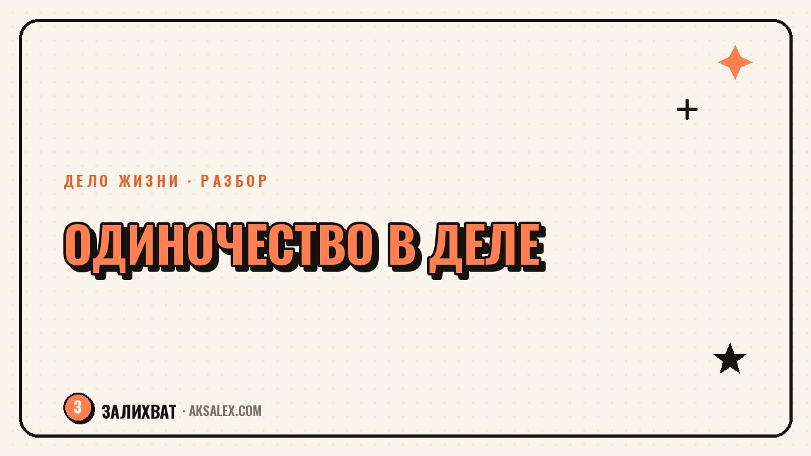

Одиночество в своём деле: как не выгореть без команды

Когда уходишь из найма в своё дело, пропадает не только начальник, но и коллеги, с которыми можно было обсудить сложное решение или пожаловаться на день. Решения теперь принимаешь один: цены, договоры, направление развития, да и сам факт, что всё идёт не так быстро, как хотелось. Это одиночество редко обсуждают в блогах про успех, но именно оно часто становится причиной выгорания раньше, чем нехватка денег или клиентов.
Почему своё дело делает одиноким
В найме есть структура: коллеги рядом, руководитель подсказывает направление, ошибки разбирают вместе. В своём деле эта структура исчезает одновременно с офисом. Ты сам себе коллега, сам себе руководитель и сам себе отдел поддержки, когда что-то идёт не так.
Добавляется и социальная сторона: друзья и родные часто не понимают специфику твоей работы и искренне не могут обсудить детали. В итоге разговоры о деле сводятся к короткому «как дела, как бизнес», а настоящая рефлексия остаётся без собеседника.
Как это ощущается на практике
- Решение принято, а обсудить его не с кем - советуешься сам с собой
- Успех некому показать так, чтобы тебя поняли
- Сложный период тянется дольше, потому что некому разделить тревогу
- Появляется чувство, что отстал от всех, кто работает в команде
Чем одиночество в деле отличается от обычной усталости
Усталость проходит после отдыха, а одиночество в деле не лечится отпуском - оно про нехватку конкретного ресурса: людей, которые понимают контекст твоей работы. Можно отдохнуть неделю и вернуться к тому же разговору с самим собой.
Одиночество в своём деле - это не про недостаток общения вообще, а про недостаток общения именно про дело.
Отличить одно от другого помогает вопрос: после разговора с друзьями про работу чувствуешь облегчение или всё равно крутишь проблему в голове? Если второе - дело не в количестве общения, а в его качестве.
Где искать людей, которые поймут контекст
Сообщество для своего дела собирается не само - его приходится искать целенаправленно, и это нормальная часть работы, а не дополнительная нагрузка сверх основной.
Форматы, которые работают
- Закрытые чаты и клубы по твоей нише, где обсуждают именно рабочие вопросы
- Регулярные встречи с другими фрилансерами или предпринимателями офлайн
- Менторство или интервизия - разговор на равных с кем-то в похожей ситуации
- Профессиональные сообщества в Телеграме или на специализированных площадках
Важно не количество связей, а регулярность: одна встреча раз в месяц, где можно честно рассказать, как идут дела, снимает больше напряжения, чем десять случайных разговоров.
Форматы поддержки: что выбрать по деньгам и формату
У разных форматов поддержки разная цена и разная глубина - полезно понимать, что подходит именно твоей ситуации, прежде чем тратить время на поиск.
| Формат | Стоимость | Глубина обсуждения | Кому подходит |
|---|---|---|---|
| Чат по нише | Бесплатно или символический взнос | Быстрые советы, обмен контактами | На старте, когда нужна база знакомств |
| Интервизионная группа | От бесплатно до небольшого взноса | Разбор конкретных ситуаций по очереди | Когда нужен регулярный разбор кейсов |
| Личный ментор | Платно, разово или по подписке | Глубокий разбор твоей ситуации | Когда есть конкретный сложный вопрос |
| Терапия или коучинг | Платно | Работа с эмоциями, а не только с делом | Когда одиночество переходит в тревогу или апатию |
Что делать, если сообщество искать пока не хочется
Не всем подходит активный поиск сообщества сразу, особенно если сил немного. Здесь помогает промежуточный шаг - письменная рефлексия: дневник решений и их результатов, чтобы зафиксировать опыт и не держать всё в голове одновременно.
- Записывай крупные решения и почему ты их принял - через месяц легче увидеть закономерности
- Раз в неделю выделяй десять минут, чтобы честно оценить, как дела, без оценки «всё супер»
- Если тревога не снижается от такой рефлексии несколько недель - это сигнал подключить живого собеседника, а не только текст
Когда одиночество - сигнал пересмотреть формат работы
Иногда одиночество в деле означает не нехватку общения, а то, что формат работы в одиночку перестал подходить лично тебе. Часть людей действительно лучше работает в команде, и признать это - не поражение, а точная настройка под себя.
Варианты здесь шире, чем «работать одному или вернуться в найм»: партнёрство с кем-то в смежной сфере, найм помощника на часть задач, совместные проекты с коллегами из той же нишы. Дело остаётся твоим, а решения - уже не только твоими.
Частые вопросы
Почему в своём деле появляется одиночество, даже если всё хорошо получается?
Одиночество связано не с успехом, а с отсутствием людей, которые понимают контекст твоей работы и могут дать обратную связь. Даже при хороших результатах не с кем обсудить решения и разделить тревогу - это и создаёт чувство изоляции.
Как понять, что дело не в усталости, а именно в одиночестве?
Усталость снимается отдыхом, а одиночество в деле - нет: после отпуска возвращаешься к тому же разговору с самим собой. Если после общения с близкими рабочая тревога не проходит, дело скорее в нехватке именно профессионального собеседника.
Где искать людей, которые поймут специфику твоего дела?
Закрытые чаты и клубы по нише, интервизионные группы, офлайн-встречи фрилансеров и профессиональные сообщества в Телеграме. Важна не разовая активность, а регулярный формат, где можно честно рассказывать о текущих делах.
Можно ли справиться с одиночеством без поиска сообщества?
Частично да - письменная рефлексия и регулярная честная оценка своего состояния снимают часть напряжения. Но если тревога не снижается несколько недель подряд, стоит подключить живого собеседника, а не ограничиваться только записями.
Значит ли одиночество в деле, что нужно бросать своё дело?
Нет, чаще это сигнал пересмотреть формат работы, а не бросать дело целиком. Можно найти партнёра, нанять помощника на часть задач или присоединиться к сообществу - дело остаётся твоим, а решения перестают быть только твоими.
Раз тема оказалась полезной, вот что почитать следующим. Нейросеть поможет собрать мысли перед приёмом, но диагноз и лечение - только от врача.
Читать статью →а не вручную